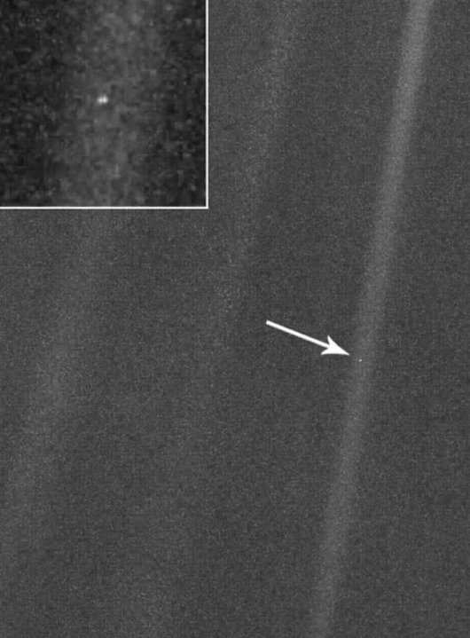

我們的家園——地球 歷史上的今天 旅行者一號在1990年2月14日，距離地球64億公里之外拍攝 卡爾薩根： 這個小小的藍點就是我們的家園， 所有世界上的事情過去的，現在的和未來的；所有你喜歡的人和不喜歡的人；所有形形色色的人和所有的喜怒哀樂都發生在這個暗淡藍點上。 它是那麼的大，包容了我們所有的世界；又是那麼的渺小，只是宇宙中的一粒微不足道的塵埃！ 它就是我們的家園——地球。  查看原始來源日期2023-08-23分類獵豹談科普slugscience-talk-240